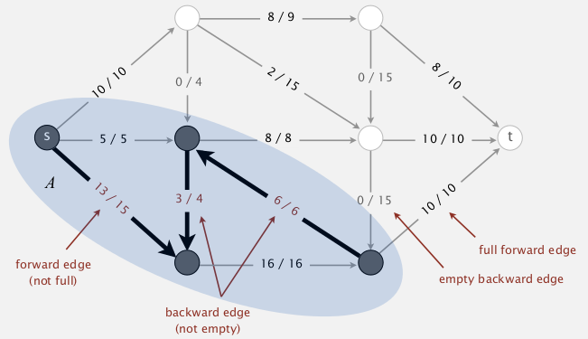

1. Introduction to Maxflow
Min-cut pb
- input: edge-weighted digraph G, each edge
ehas weight("capacity")c[e]>=0, a source vertexs, a target vertext. - def. an st-cut
(A,B)is a partition of vertices into 2 disjoint sets A and B, withsin setAandtin setB. - def. the capacity of a cut
(A,B)is sum of capacities of edges going from A to B (not considering B to A).

⇒ min-cut pb: find the cut (A,B) with min-capacity.
Max-flow pb
- same input: graph G, source s, target t
- def. an st-flow is an assignment of values to edges
f: e→f[e]such that:- capacity constraint:
0<=f[e]<=c[e]for any e; - local equilibrium: for any vertex v (other than s or t), inflow=outflow;
- capacity constraint:
- def. the value of a flow
fis the inflow att. (assume no ingoing edge to s or outgoing edge to t)

⇒ max-flow pb: find f with max value.
remark: max-flow and min-cut are dual problems.
2. Ford-Fulkerson Algorithm
def. given a flow f for a graph, an "augment path" is an undirected path form s to t, if there exist df>0 ("bottleneck capacity") such that:
- for forward edges e: can augment flow by
df(not full:f[e]+df<=c[e]) - for backward edges: can decrease flow by
df(not empty:f[e]-df>=0)

- def. residual capacity
- for forward edge e, residual-cap = c[e]-f[e]
- for backward edge e, residual-cap = f[e]
⇒ an aug-path is a path where each edge has residual capacity >0.
blocking edges: full forward edge or empty backward edge.
→ idea: increase flow along augment paths.
[algo]
- start: 0 flow:
f[e]=0for all e.- find an augment path (and the corresponding
df) in graph, and change the flows along the path by+/-df.- loop until no augment path exists. (ie. all path s→t are blocked either by a full forward edge or an empty backward edge, ie. by an edge with 0 residual capacity)

FF is a gernel algorithm:

3. Maxflow-Mincut Theorem
def. for a cut (A,B), the net flow across the cut (netflow(A,B)) is the sum of flows from A to B minus flows from B to A.
[flow-value Lemma]
For any flowfand any cut(A,B)⇒ netflow(A,B) = value(f).
pf.
induction on the size of set B.
base case, when B={t}, by def we have netflow(A,B) = value(f)
when moving any vertex v from A to B:
* netflow(A, B) augment by flow(A→v)+flow(B→v)=inflow(v),
* netflow(A, B) decrease by flow(v→A)+flow(v→B)=outflow(v),
* by equilibrium of flow, netflow(A',B')=netflow(A,B)=value(f)
ex. (A: gray vertices, B: white vertices)

[cor] outflow(s)=inflow(t)=value(f)
[weak duality]
For any flowfand any cut(A,B), ⇒ value(f) <= capacity(A,B).[Augmenting path Th]
A flowfis maxflow iff there is no augment path.[maxflow-mincut Th]
value(maxflow) = capacity(mincut).
pf.
for any flow f, prove the equivalence of the 3 following statements:
i. there exists a cut st: capacity(cut) = value(f).
ii. f is a maxflow.
iii. there is no augmenting path wrt f.
- [i⇒ii]
suppose cut(A,B) st: capacity(A,B)=value(f)
⇒ by weak duality, for any other flow f', vlaue(f')<=capacity(A,B)=value(f)
- [ii⇒iii] (eqv to prove ~iii⇒~ii)
suppose there is an aug-path from s to t, of bottleneck capacity=df,
⇒ by improving f with df, we get a f' > f
- [iii⇒i]
suppose there is no aug-path, ie, all path from s to t are blocked by some full-forward edge or empty backward edge.
⇒ let A:=vertices connected with s by a path with no blocking edges, and B := the rest
(so once we get a maxflow, we can compute the mincut in this way)

→ for all edges across A and B, all forward edges are full, all backward edges are empty
⇒ capacity(A,B) = netflow(A,B) = value(f) by flow-value lemma
CQFD... 过瘾...
4. Running Time Analysis

- getting a mincut form maxflow? → easy (as discussed in the pf above)
- computing an aug-path? → BFS
- does FF algo always terminate? how many augmentations? → ...
integer capacity graphs
special case of FF algo: edge capacities are integers between 1 and U.
invariant: flow is always integer all along FF algo.
[prop] nb of augmentations <= value of maxflow.
pf. each augmentation will add flow by >=1.
[integrality Th] There exist an integer-valued maxflow.
Bad case for FF
nb of augmentation == value of maxflow
(each time, the path through the middle edge is chosen as aug-path)

can be easily avoided⇒ by using shortest(nb of edges)/fastest(biggest df) path

Performance of FF depends on the algo for choosing aug-path:

5. Java Implementation
representation of flow graph
- flow edge:
each e= v→w, have flow f[e] and capacity c[e].
- flow graph:
put e in both v and w's adj-list.
- flow augmentation (by delta)
- for forward edge e, f[e] += delta
- for backward edge e, f[e] -= delta
Residual graph Gr
def. For a flow f and a graph G, the residual graph Gr is obtained by:
for each edge
e=v→w, (withc[e]andf[e]) inG, put inGr:
e1=v→w, with weight=c[e]-f[e]
e2=w→v, with weight=f[e](即两个方向上的weight都为residual capacity)
(rmq: Gr is just a weighted digraph, not a flow graph)
[prop] Augment path in G is equivalent to a path in Gr (df of aug-path in G = min edge weight in Gr).
(但是实现的时候其实不用显式构造Gr, 只需BFS的时候修改一下即可)

APIs
这里的API设计的非常合理... 导致每一部分的代码量都不大... NB
-
flow-edge:
rmq. both calculate residual-cap and augmentation need to specify a direction, so we need a index v as parameter for these 2 functions.public class FlowEdge{ private final int v, w; private final double capacity; private double flow=0.0; FlowEdge(int v, int w, double cap); int from(); int to(); int other(int v); double capacity(); double flow(); double residualCapTo(int v);// residual capacity void addFlowTo(int v, double delta);// augment residual flow } -
flow graph:
public class FlowNetwork{ private Bag<FlowEdge>[] adj;//use adj-list representation for flow graph FlowNetwork(int V); void addEdge(FlowEdge e); Iterable<FlowEdge> adj(int v);// both incoming and outgoing edges ... } -
FF algo:
- use a function
hasAugPath()to test termination - use a function
bottleNeck()to get delta - if a augpath is found, use two arrays
reached[]andedgeTo[]to get the augpath (find the path backwards).
- use a function
code:
public class FordFulkerson{
private boolean[] reached; //reached[v] indicates if a path s-->v exists in Gr, used in DFS
private FlowEdge[] edgeTo;// edgeTo[v] = last edge on the path s-->v
private double value=0.0;// value of flow
public FordFulkerson(FlowNetwork G, int s, int t){
while(this.hasAugPath(G,s,t)){
double delta = this.bottleNeck();
for(int v=t; v!=s; v=edgeTo[v].other(v))
edgeTo[v].addFlowTo(v, delta);
this.value += delta;// each time the flow value augments by delta
}
}
private double bottleNeck(){//bottleneck-cap = min residual flow on the aut-path
double bottleneck = 9999999;
assert(reached[t]);// the aug-path should exsit
for(int v=t; v!=s; v = edgeTo[v].other(v))
bottleneck = Math.min(bottleneck, edgeTo[v].);
return bottleneck;
}
private boolean hasAugPath(FlowNetwork G, int s, int t){
// perform a BFS
Queue<Integer> q = new LinkedList<Integer>();
this.reached = new boolean[G.V()];
this.edgeTo = new FlowEdge[G.V()];
q.add(s);
while(!q.isEmpty()){
int v = q.deque();
for(FlowEdge e:G.adj(v)){
int w = e.other(v);
if(!reached[w] && e.residualCapTo(w)>0){// modified BFS: valid edges are those with residualCap>0
edgeTo[w] = e;
reached[w] = true;
if(w==t) return true;// t is reached by BFS
q.enqueue(w);
}
}
}// BFS while loop
return false;
}
}//class FF
6. Maxflow Applications
关键是建模很巧妙...

ex1. bipartite matching pb
二分图的最大匹配问题. (有点像marriage stable问题...但是不一样 因为没有preference order)

⇒ is there a way to match all students to a job?
ie. given a bipartite graph, find a perfect matching.

modeling
- add source
sand targett- all edges from
sto students: capacity=1- all edges from companies to
t: capacity=1- all edges from student to company: capacity=INF
⇒ find maxflow in the graph

when no perfect matching: mincut can explain why

in the above case, student 2,4,5 can only be matched to 7,10
⇒ mincut can help us find such cases!
recall: how to get mincut from maxflow
mincut = (A,B), where:
A:=vertices connected with s by a path with non blocking edges,
B := the rest
(blocking edges: full forward edge or empty backward edge on path)
ex.

- let S=students on s side of mincut (in above case, S={2,4,5})
- let T=companies on s side of mincut (in above case, T={7,10})
- |S|>|T|, that's why no perfect matching!
ex2. baseball elimination

(前三列是目前成绩, 后面四列是接下来赛程矩阵)
Montreal is mathematically eliminated → easy to see
→ Philly is mathematically eliminated also !
- another case:

Detroit is mathematically eliminated !

whether team-4 still has a chance to win?
modelling
- remaining games flow from s to t.
- use team-pairs ans teams as vertices
- carefully chosen capacities(see below)

⇒ team 4 could win iff all flow from s are full (ie. all match points can be repartitioned over other teams without depassing team 4's maximum wins).
总之很巧妙....

Comments !